뇌의 해석
유모세포가 전달한 전기 신호는 이제 뇌의 해석을 거치게 된다
유모세포가 전달한 전기 신호는 이제 뇌의 해석을 거치게 된다
측두엽에 위치한 청각피질은 뇌에 도착한 전기 신호를 분석하기 시작한다. 높은 주파수, 낮은 주파수, 리듬, 언어적 의미, 악기 종류 등 구분할 수 있다. 그러나, 뇌가 소리를 있는 그대로 받아들이지 않는다. 뇌는 과거의 경험이나 귀의 상태에 따라 중요하다고 생각하는 주파수를 증폭하거나 무시한다.
이 영상을 통해 소리는 존재하는 것이 아니라 뇌의 적극적인 해석이자 선택이라는 것을 느낄 수 있을 것이다.
만약 로럴로 들린다면 낮은 주파수에 더 민감한 사람이다.
만약 야니로 들린다면 높은 주파수에 더 민감한 사람이다.

지금 당신의 뇌는, 어떤 세상을 연주하고 있는가?
세상엔 오직 차가운 공기의 떨림과, 물리적인 에너지의 이동만 있을 뿐이다.
하지만 이 적막한 진동이 우리의 뇌에 도착하는 순간, 비로소 ' 소리 ' 라는 생생한 경험으로 다시 탄생한다.

소리는 세상에 존재하는 것이 아니라, 우리의 머릿속에서 매 순간 해석되고 있는 것이다.